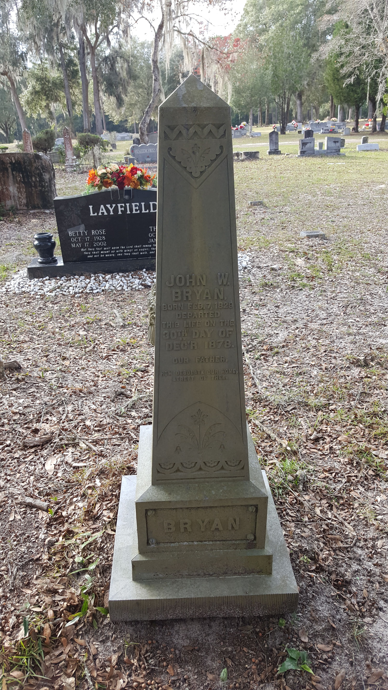

John Waters Bryan
1829–1878
Life Events
Born: February 7, 1829
Died: December 30, 1878
Family
Spouse:
Children
Military Service
No military service information has been added.
Biography
John Waters Bryan was born on February 7, 1829, in Georgia. His birth and death dates are recorded on his gravestone at Fort White City Cemetery in Columbia County, Florida.
The 1850 United States Census records a John W. Bryant, age 21, working as a merchant and living in Pike County, Georgia, in the household of Alexander and Harriet Bryant. These individuals are believed to be John's parents, although the relationship requires further documentation.
John married Dolly Ann Leslie on January 2, 1853, in Spalding County, Georgia. Their original marriage record identifies the couple as John W. Bryan and Dolly Ann Leslie.
John and Dolly lived in Spalding County, Georgia, during the 1860 and 1870 censuses. Their household included several children. Their daughter Mary Evline Bryant was born about 1875.
John died on December 30, 1878, at the age of 49. He is buried in Fort White City Cemetery in Fort White, Columbia County, Florida.
Historical records use both Bryan and Bryant as spellings of the family surname.
Photos
No additional photographs have been added.
Grave & Burial

Fort White City Cemetery, Fort White, Columbia County, Florida
Sources
No sources have been added yet.